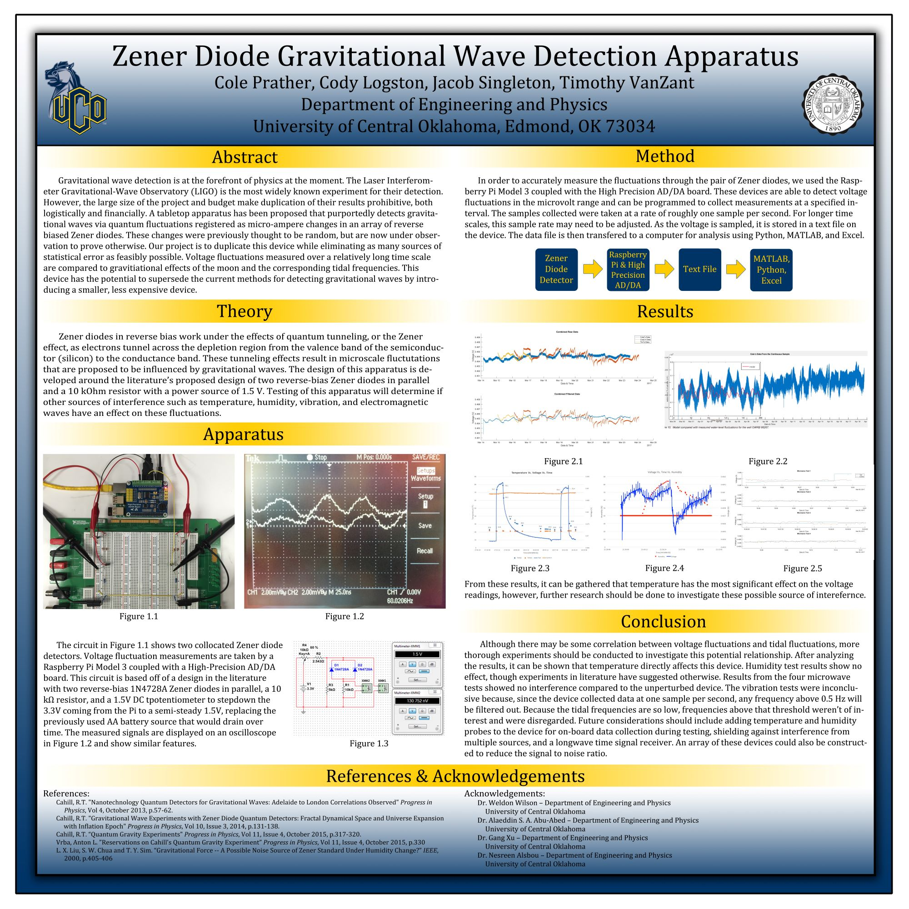

Overview
The detection of gravitational waves has been one of modern physics' most significant challenges. Current facilities like LIGO operate at a cost of $620 million with annual operating expenses of $30 million—placing fundamental research into gravitational wave phenomena beyond the reach of most educational and research institutions. In 2017, I led a team of four senior-level engineering physics majors at the University of Central Oklahoma to design and build a low-cost alternative: a tabletop apparatus based on the theoretical framework proposed by physicist Reginald T. Cahill, which suggested that quantum tunneling effects in reverse-biased Zener diodes might detect fluctuations in spacetime caused by gravitational waves.
Design and Implementation
The apparatus itself was deceptively simple: a circuit containing two Zener diodes in reverse bias, powered by a 1.5V battery. The device's elegance lay not in the circuit but in the measurement system. We constructed a high-resolution data acquisition system using a 16-bit analog-to-digital converter, enabling measurement sensitivity to 0.0381 mV. We then developed a data analysis pipeline using MATLAB and Python to filter, process, and analyze the collected voltage fluctuations over extended periods. The entire apparatus cost less than $150 to build, making it accessible for educational and research applications at universities without billion-dollar budgets.
Experimental Testing
To distinguish genuine gravitational effects from environmental noise, we systematically tested the apparatus's sensitivity to controllable factors: temperature, humidity, microwave radiation, and vibration. Temperature testing revealed expected thermal effects on the Zener diodes' behavior—a known characteristic requiring careful control in future designs. Humidity testing produced no observable effects on voltage readings. Microwave and vibration tests showed no significant results, though we noted that our sampling frequency may have been insufficient to resolve vibration frequencies that could theoretically overlap with high-frequency gravitational wave spectra. The apparatus continued to generate non-random voltage fluctuations throughout testing, and we observed correlation between simultaneous measurements from two independent devices—though we did not complete a rigorous numerical analysis of this correlation.
Scope and Contribution
The project was explicitly scoped to exclude gravitational wave detection analysis—a determination beyond the educational level of a senior undergraduate team. Rather, our contribution was to the instrumentation and methodology: we built a replicable, low-cost apparatus; established systematic testing procedures for environmental sensitivity; and created design specifications for future research groups. The work demonstrates that rigorous scientific investigation into novel detection principles need not require massive budgets, and that careful experimental design can separate signal from noise even in systems with uncertain underlying physics. For future researchers, the project documents detailed specifications, test procedures, and implementation details enabling continued investigation into whether quantum effects in semiconductor materials might provide windows into gravitational phenomena.
{kind=link}
